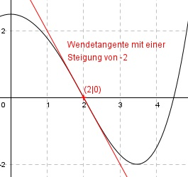

Aufgabe 82 Der Graph einer achsensymmetrischen ganzrationalen Funktion 4. Grades hat in (2|0) einen Wendepunkt, und die Wendetangente hat eine Steigung von -2. Wie lautet seine Funktionsgleichung?  Allgemeine Form einer achsensymmetrischen ganzrationalen Funktion 4. Grades: f(x) = ax4 + cx2 + e f’(x) = 4ax3 + 2cx f’’(x) = 12ax2 + 2c 3 Bedingungen: 1. Hat im Punkt (2|0) einen Wendepunkt bedeutet zum einen: f(2) = 0 --> a * 24 + c * 22 + e = 0 --> 16a + 4c + e = 0 I 2. Hat im Punkt (2|0) einen Wendepunkt bedeutet zum anderen: f’’(2) = 0 --> 12a * 22 + 2c = 0 --> 48a + 2c = 0 II 3. Die Wendetangente hat eine Steigung von -2 bedeutet: f’(2) = - 2 --> 4a * 23 + 2c * 2 = - 2 --> 32a + 4c = - 2 III II * (-2) + III -96a - 4c = 0 32a + 4c = -2 --------------- -64a = - 2 |:(-64) a = 2/64 = 1/32 = 0,03125 a = 0,03125 in II eingesetzt: 48 * 0,03125 + 2c = 0 1,5 + 2c = 0 |-1,5 2c = -1,5 |:2 c = -0,75 a = 0,03125 und c = -0,75 in I eingesetzt: 16 * 0,03125 + 4 * (-0,75) + e = 0 0,5 - 3 + e = 0 -2,5 + e = 0| +2,5 e = 2,5 Gesuchte Funktionsgleichung: f(x) = 0,03125x4 - 0,75x2 + 2,5